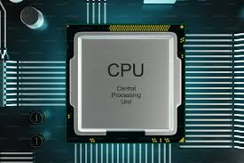

2.1 Organización del procesador
El procesador, también conocido como CPU (Unidad Central de Procesamiento), está compuesto por tres elementos principales:
Unidad de Control (CU): Coordina todas las operaciones de la computadora. Dirige el flujo de datos entre los componentes y asegura que las instrucciones se ejecuten en el orden correcto.
Unidad Aritmético-Lógica (ALU): Realiza cálculos matemáticos básicos (como sumas o restas) y operaciones lógicas (como comparaciones).
Registros: Memorias internas de alta velocidad que almacenan temporalmente datos e instrucciones durante el procesamiento.
Estos componentes trabajan juntos para ejecutar programas y procesar datos. La eficiencia del procesador depende de su organización interna y capacidad para manejar tareas simultáneamente.

2.2 Estructura y tipos de registros
Los registros son pequeñas áreas de almacenamiento dentro de la CPU que permiten guardar temporalmente datos o instrucciones durante la ejecución de programas. Los principales tipos de registros son:
Registro de propósito general: Se utilizan para almacenar datos que se manipulan durante el procesamiento.
Registro de propósito específico: Diseñados para funciones específicas, como:
- Contador de programa (PC): Guarda la dirección de la siguiente instrucción a ejecutar.
- Registro de instrucciones (IR): Almacena la instrucción que se está ejecutando.
- Acumulador (ACC): Guarda resultados intermedios de cálculos realizados por la ALU.
2.3.1Ciclo Fetch-Decode-Execute (FDE)
El ciclo Fetch-Decode-Execute es el proceso fundamental que permite a la CPU ejecutar instrucciones. Este se divide en tres etapas:
Fetch (Obtener): Se localiza la instrucción en memoria y se transfiere al registro de instrucciones (IR).
Decode (Decodificar): La unidad de control interpreta la instrucción y organiza los recursos necesarios para ejecutarla.
Execute (Ejecutar): La ALU realiza la operación requerida (suma, comparación, etc.) o se transfiere un dato de memoria.
El tiempo que toma este ciclo afecta directamente el rendimiento del procesador.
2.3.2 Segmentación de instrucciones
La segmentación es una técnica que divide las instrucciones en etapas, de forma que mientras una instrucción está siendo ejecutada, otra puede estar siendo decodificada y una tercera recuperada. Esto aumenta el rendimiento del procesador al aprovechar mejor sus recursos.
Ejemplo de etapas en la segmentación:
- Recuperación de instrucción.
- Decodificación.
- Ejecución.
- Escritura del resultado.
2.3.3 Conjunto de instrucciones
El conjunto de instrucciones es el grupo de comandos que un procesador puede entender y ejecutar. Estos comandos incluyen operaciones como mover datos, realizar cálculos, controlar el flujo del programa, entre otros.
Ejemplo de instrucciones comunes:
- MOV: Mueve datos entre registros o memoria.
- ADD: Suma valores en registros o memoria.
- JMP: Salta a una dirección específica en el programa.
Cada tipo de procesador tiene un conjunto de instrucciones único, definido por su arquitectura.
2.3.4 Modos de direccionamiento
Los modos de direccionamiento indican cómo la CPU accede a los datos que necesita para ejecutar una instrucción. Algunos modos comunes son:
- Directo: La dirección del dato está directamente en la instrucción.
- Indirecto: La instrucción contiene una referencia a la ubicación del dato.
- Inmediato: La instrucción contiene directamente el valor del dato.
Estos modos permiten mayor flexibilidad en la programación y uso eficiente de los recursos.
2.4 Estudio y análisis de la CPU
El estudio de la CPU se centra en evaluar su rendimiento, compatibilidad y adecuación a las tareas requeridas. Factores clave en el análisis incluyen:
- Benchmarking: Pruebas estándar que miden la velocidad y eficiencia de la CPU en distintas tareas.
- Consumo energético: Evaluación de cuánta energía requiere el procesador, especialmente en dispositivos portátiles.
- Compatibilidad: Asegurarse de que la CPU funcione correctamente con la placa base y otros componentes del sistema.
